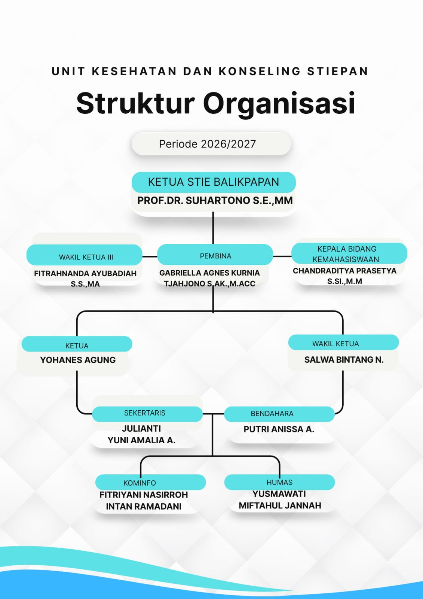
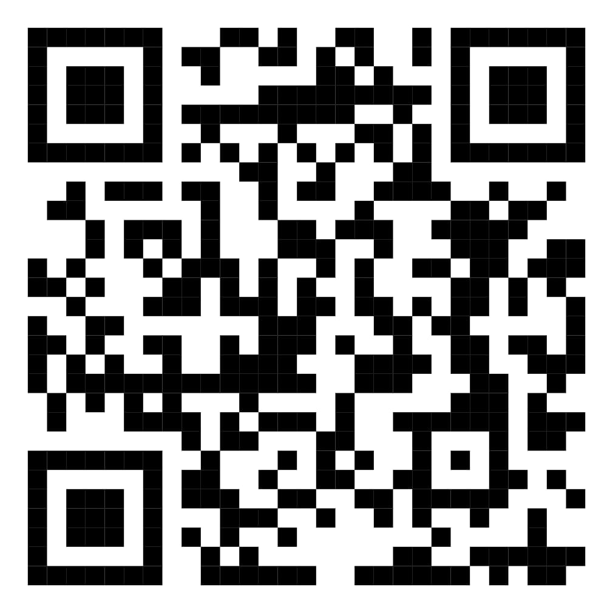

Ruang nyaman untuk pulih.
Kami mendampingi dan menjaga kesehatan fisik serta mental mahasiswa selama dinamika perkuliahan di Sekolah Tinggi Ilmu Ekonomi Balikpapan.
Fasilitas pelayanan kesehatan dasar bagi seluruh civitas akademika.
Halo, rekan mahasiswa! Ruang Unit Kesehatan STIEPAN hadir cuma-cuma untuk kalian yang membutuhkan.

"Menjadi pionir dalam menyediakan layanan kesehatan yang peduli terhadap mahasiswa STIEPAN, serta berkomitmen meningkatkan kesejahteraan dan kesehatan komunitas melalui inovasi, edukasi, dan kolaborasi yang berkelanjutan."
Menyediakan layanan kesehatan yang selalu ada saat dibutuhkan.
Menyediakan edukasi dan penyuluhan kesehatan yang komprehensif kepada mahasiswa dan warga STIEPAN untuk meningkatkan kesadaran akan kesehatan, pencegahan penyakit, serta kepedulian atas kesehatan mental.
Memastikan semua mahasiswa dan warga kampus memiliki akses yang mudah dan terjangkau ke layanan kesehatan yang kami tawarkan.
Bekerja sama dengan berbagai pihak — lembaga pemerintah, swasta, dan komunitas — untuk menciptakan solusi kesehatan yang berkelanjutan.
Berkomitmen meningkatkan kualitas hidup masyarakat kampus melalui program-program kesehatan yang terpadu dan berkesinambungan.
Empat bentuk dukungan yang selalu siap.
Setiap layanan ditandai warna sesuai jenis dukungannya.
Fasilitas Istirahat (Bed)
Tempat tidur yang bersih, tenang, dan nyaman jika kamu merasa lemas, pusing, atau butuh istirahat sejenak di sela jam kuliah.
Penyediaan Obat Gratis
Akses obat dasar dan alat penunjang P3K — obat mag, flu, paracetamol, pembersih luka, hingga perban — sesuai SOP pertolongan pertama.
Sinergi & Ruang Aman Kampus
Berkomunikasi aktif dengan pihak kampus, termasuk Satgas PPKPT, demi ruang perlindungan yang aman saat kondisi darurat fisik maupun psikis.
Dukungan Kegiatan Ormawa
Peminjaman perlengkapan medis (tandu, tensimeter, dll) serta kotak P3K siap pakai untuk mendukung acara organisasi kemahasiswaan.
Temui kami di lantai 1.
Gedung Kampus STIEPAN, Lantai 1
Tepat di sebelah Ruangan Dosen Pascasarjana — mudah dijangkau dari area perkuliahan utama.
Senin – Jumat
Mengikuti jadwal perkuliahan mahasiswa. Datang langsung atau diantar teman/dosen kapan saja dibutuhkan.
Alur penanganan mahasiswa sakit.
Empat langkah yang kami tempuh, dari kedatangan hingga rujukan darurat bila diperlukan.
Kedatangan & Akses Ruangan
Mahasiswa yang merasa sakit dapat datang langsung secara mandiri atau diantar oleh teman/dosen ke ruang Unit Kesehatan, dengan mengambil kunci ruangan yang tersedia di Pos Security / Keamanan terlebih dahulu.
Absensi Masuk
Mahasiswa wajib melakukan absensi masuk saat tiba di ruang Unit Kesehatan.
Pemeriksaan Awal
Jika ada petugas piket yang sedang tidak ada kelas dan bertepatan berada di lokasi, petugas akan membantu melakukan pemeriksaan fisik dasar (seperti cek suhu tubuh atau tekanan darah) dan mencatat keluhan mahasiswa.
Pemberian Tindakan/Obat
Mahasiswa dipersilakan beristirahat di fasilitas bed yang disediakan dan diberikan tindakan P3K atau obat dasar yang sesuai.
Saran Penanganan Lanjutan
Jika setelah beristirahat kondisi tidak kunjung membaik atau dirasa butuh penanganan lebih lanjut, petugas tidak bisa memberikan rujukan resmi, melainkan hanya menyarankan untuk pemeriksaan lebih lanjut ke puskesmas ataupun rumah sakit terdekat.
Absensi Keluar
Mahasiswa wajib melakukan absensi keluar setelah selesai mendapatkan penanganan atau sebelum meninggalkan ruang Unit Kesehatan.
Peminjaman alat, stok obat, dan kontak darurat.
Panitia Ormawa yang akan mengadakan kegiatan wajib mengajukan permohonan peminjaman kotak P3K maksimal H-3 sebelum acara melalui formulir digital di bawah ini.
Peminjaman Alat Medis & P3K Acara
Untuk kegiatan Ormawa di dalam maupun luar kampus. Ajukan maksimal H-3 sebelum acara berlangsung.
Stok Obat Unit Kesehatan
Pantau ketersediaan obat dan alat P3K yang terupdate secara berkala.
Kontak Darurat WhatsApp
Yohanes · Pengurus Unit Kesehatan & Konseling
